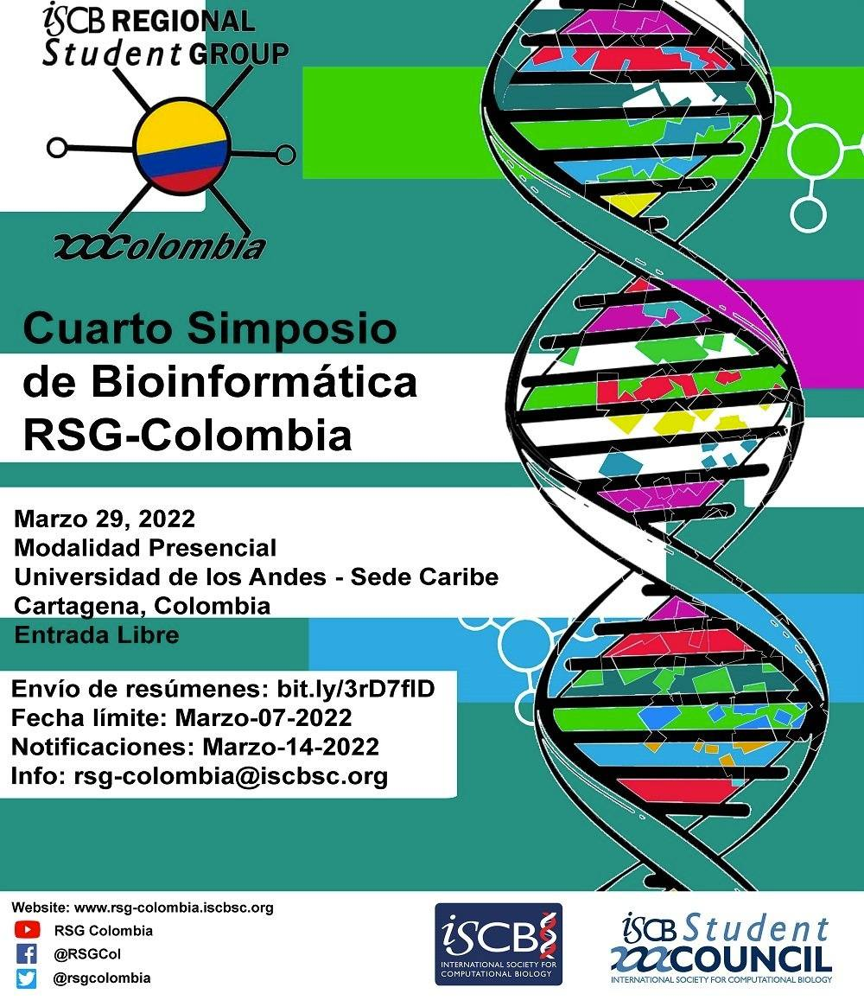
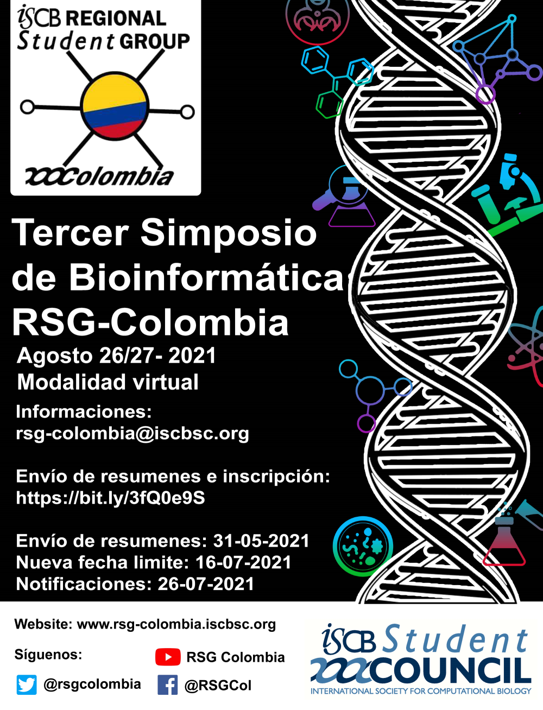
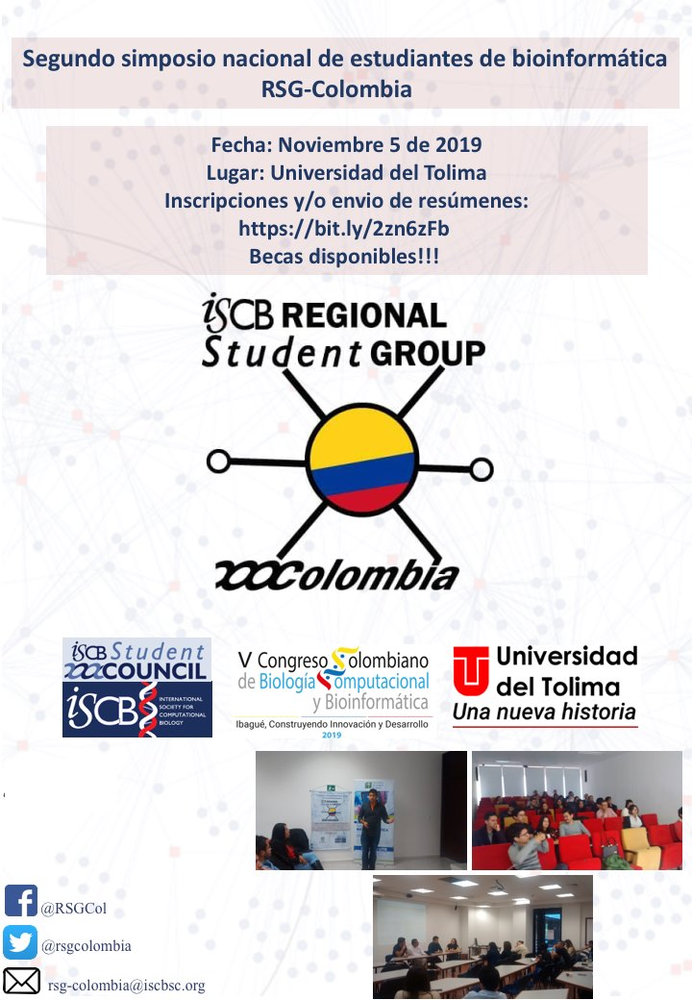
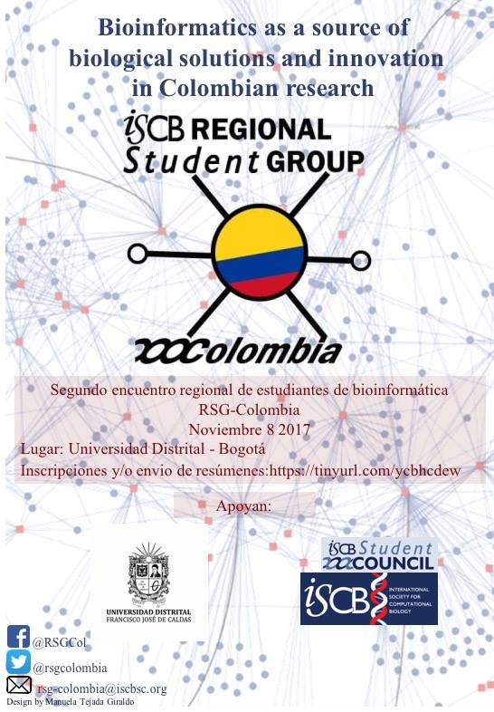

Eventos anteriores
El RSG-Colombia junto con su equipo ha contado con innumerables eventos a nivel nacional, con la participación de especialistas en las areas de bioinformatica y biología computacional. Dentro de estos eventos se han destacado participantes a nivel nacional e internacionales de numerosas universidades, y con el apoyo de profesores y estudiantes ademas se ha promulgado la participación cientifica, principalmente de estudiantes asi como la creación de cursos para la fomentación del aprendizaje dentro de la bioinformatica.
Participaciones
Cuarto Simposio de Bioinformática RSG-Colombia - Marzo, 2022
El RSG- Colombia presentó el Cuarto Simposio de Bioinformática en la Universidad de los Andes - Sede Caribe, Cartagena, Colombia en Marzo 29, 2022 donde se dieron a conocer diversos trabajos dentro de la comunidad universitaria y cientifica en el area de bioinformatica y biología computacional.
Tercer Simposio de Bioinformática RSG-Colombia - Agosto, 2021
El RSG- Colombia presentó el Tercer Simposio de Bioinformática en formato virtual atendiendo las medidas sanitarias del COVID-19, dentro de este simposio se lograron realizar diversas ponencias y la presentación y divulgación de trabajos cientificos. Se realizó con exito una mesa redonda con la tematica "Proyección profesional en bioinformática: Entre la academia e industria". en la cual paritiparon diversos actores dentro del area, como Javier Gutierrez - Director Cientifico de Genexia, David Ayala - Bioinformáticx y cientificx de datos freelance y Sergio Hleap - Consultor de computación de alto rendimiento en SHARPCNET de la University of Guelp Canada. El evento tambien contó con la participación de Liliana López Kleine de la Universidad Nacional de Colombia con la charla "Retos Estadisticos en el analisis de datos transcriptomicos".
Segundo Simposio de Bioinformática RSG-Colombia - Noviembre, 2019
El RSG- Colombia presentó el Segundo simposio nacional de estudiantes de bioinformática RSG - Colombia. Este evento se llevará a cabo un dia antes del inicio del V Congreso Colombiano de Biología Computacional y Bioinformática. en la Universidad del Tolima en Noviembre del 2019. Este evento contó con el apoyo de la administración de la Universidad del Tolima y el Congreso en mención, asi como el ISCB, en el cual se presentaron diversos trabajos y exposiciones dentro del area de la bioinformatica y biologica computacional, asi como la integración de estudiantes, cientificos y la comunidad universitaria presente en ambos eventps.
Segundo encuentro regional de estudiantes de bioinformática y biología computacional - Noviembre, 2017
El RSG- Colombia presentó el Segundo encuentro regional de estudiantes de bioinformática y biología computacional, en la Universidad Distrital de Bogotá en Noviembre del 2017. En el cual tenia como objetivo la integracion de estudiantes dentro de las areas de bioinformatica y biologia computacional, para la integracion de la comunidad referente, y la participación de estudiantes para la exposición de trabajos cientificos en la tematica.
Galeria


